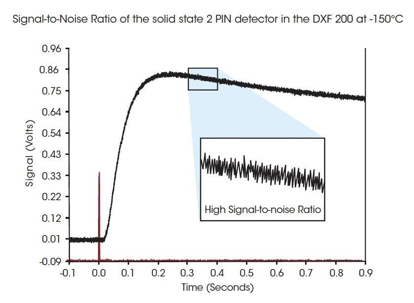
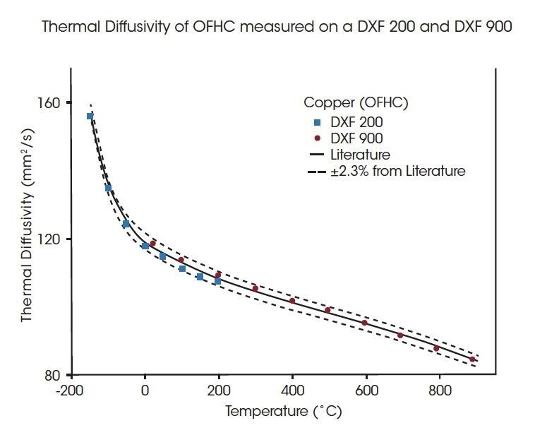

The Discovery Xenon Flash DXF 200 features a patented High-Speed Xenon-pulse Delivery™ source (HSXD) and an anamorphic multi-faceted Light Pipe™. Together, these optics deliver a light pulse of unsurpassed power and uniform intensity to the specimen, while preventing sample holder over-flash. The DXF 200 employs a solid-state PIN detector that enables high-sensitivity measurements under cryogenic conditions. Only TA Instruments High-energy Xenon design is capable of testing samples to a diameter of 25.4 mm over a temperature range from -150°C to 200°C. The use of large samples diminishes errors associated with inhomogeneity and permits representative measurements of poorly dispersed composites. The DXF platform is designed for research and development programs as well as production control.
Lowest Temperature with Highest Signal-to-Noise Ratio
The increasing demand of new high-performance materials for the aerospace and defense industries has pushed the demand for Flash Diffusivity instrumentation with lower temperature range and better data quality. The solid state Dual PIN detector can operate down to an industry-leading -150˚C with excellent data quality.
The figure on the upper right demonstrates the quality of the signal-to-noise ratio (SNR) of the DXF 200 at cryogenic temperatures. Even at -150°C the amplitude of the directly measured signal is approximately five times greater for the solid-state PIN detector than for a traditional IR detector signal at room temperature.

Consistent Date from -150°C to 900°C
Often high performance materials need to be characterized from extremely low to high temperatures. The graph on the lower right shows an oxygen-free high thermal conductivity copper (OFHC) reference material in which thermal conductivity was measured from -150°C to 900°C with both a DXF 200 and DXF 900.

All the measurements fall within ±1.5% of the reference values. Note the agreement of the values between ambient and 200˚C.